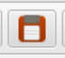

Eine erste Animation
Einlesen einer Bildsequenz
Beginnen wir mit einer bereits vorbereiteten Bildsequenz und machen daraus ein animiertes PNG. Die Einzelbilder dafür sind im Ordner RunPNG/doc/samples/sprockets 3/ gespeichert.

Zunächst starten wir RunPNG. Im Menü Datei befindet sich der Eintrag Bilderserie öffnen .... Analog dazu lässt sich auch die dazu gehörige Schaltfläche in der Werkzeugleiste verwenden. Klickt man auf eines der beiden, erscheint ein Bilderserie öffnen-Dialog.
Dieser Dialog lässt eine Mehrfachauswahl zu. Für das Laden aller 15 Bilder klicken wir erst auf das Bild links oben und dann mit gedrückter Hochstelltaste auf das Bild rechts unten. Damit sind alle Bilder gewählt. Zuletzt noch auf Öffnen klicken und RunPNG lädt die ganze Bilderserie in den Speicher.
Wir haben jetzt eine Serie von 15 Bildern im Arbeitsspeicher der Applikation. Auf den ersten Blick zeigt sich bei den einzelnen Bildern kaum ein Unterschied. Doch er ist da. Beim ersten Bild steht das Zahnrad noch gerade. Beim zweiten ist es um nur 2° im Uhrzeigersinn gedreht, beim dritten um 4°, dann um 6° usw. Das ergibt beim letzten (15.) Bild eine Drehung von 28°.
Der Grund: Das dargestellte Zahnrad besitzt 12 Zähne. 360° geteilt durch 12 ergibt 30°. In der Bildsequenz wird sich das Zahnrad nur um 28° drehen. Wenn das Bild mit 30° Drehung erscheinen sollte, springt die Darstellung jedoch wieder auf Bild #0 zurück und die Abfolge beginnt neu. Dadurch sieht es so aus, als würde sich das Zahnrad kontinuierlich weiterdrehen. Auf diese Art spart man sich viel Arbeit, Speicherplatz und ggf. Übertragungszeiten im Internet. Denn für eine volle Umdrehung in 2°-Schritten bräuchten wir 180 Einzelbilder. Was beim vorliegenden Material nicht viel Sinn ergäbe.
Einstellen der Animation
Als Nächstes muss die Applikation wissen, in welcher Art animiert werden soll. Dazu gibt es drei Möglichkeiten:
- Nicht animiert erklärt sich von selbst. Mit dieser Einstellung würde nur das erste Einzelbild als einfache PNG-Datei gespeichert.
- Animiert bedeutet, dass alle Einzelbilder in die Animationsschleife einbezogen werden.
- Animiert, überspringe erstes Bild ist für Anzeigeprogramme gedacht die u. U. noch keine animierten PNG-Dateien darstellen können. Oder es vielleicht nicht sollen. Dort würde dann nur das erste Bild gezeigt. Das auch z. B. einen Hinweis darauf enthalten könnte, dass animierte PNG-Dateien nicht unterstützt werden.
Gleich darunter lässt sich die Anzahl der Wiederholungen einstellen. Die Zahl 0 bedeutet eine endlose Wiederholung solange das Bild gezeigt wird. Eine höhere Zahl begrenzt die Wiederholungen auf den eingegebenen Wert. Letzteres ist für Anwendungsfälle gedacht in denen sich eine fortwährende Wiederholung eventuell als störend erweisen könnte.
Die weiteren Einstellungen an diesem Tabulator werden an anderer Stelle behandelt.
Einstellen der Verzögerungszeit
Unter dem Tabulator "Einzelbild" kommen wir nun zur Verzögerungszeit der Einzelbilder. D. h. wie lange ein Bild gezeigt wird, bis das darstellende Programm zum nächsten Bild wechseln soll. Eine Einstellung von 0 ist möglich und wird im APNG-Standard auch ausdrücklich akzeptiert. Was dann bedeutet, dass das Programm den Bildwechsel so schnell wie möglich vornehmen soll.
Besagter APNG-Standard sieht für die Zeitangabe einen Bruch in Sekunden vor: Zähler / Nenner. Was z. B. 1/10 Sekunde aber mit 60/1 auch eine Minute dauern kann. Hier lässt sich ein Minimalwert von 1/1000 s und ein Maximalwert von 65.535/1 s (> 18 h) einstellen. RunPNG bietet als Komfortfunktion noch die Eingabe von Millisekunden an und wandelt das in einen Bruch um.
Die hier vorgenommenen Einstellungen beziehen sich zunächst jeweils auf das aktuell gewählte Einzelbild, so dass mit individuellen Werten gearbeitet werden kann. Mit Klick auf die Schaltfläche Verzögerung für alle Bilder lässt sich die Darstellungszeit auch auf alle anderen Bilder übertragen. Stellen wir hier einfach mal eine Verzögerungszeit von 100 ms bzw. 1/10 s für alle Bilder ein. Oder einen anderen Wert wenn gewünscht.
Dann sieht das in der unteren Bildleiste in etwa so aus. Die Einzelbilder zeigen nun die gewählte Darstellungs- bzw Verzögerungszeit. Kleiner Tipp: Wenn man mit dem Mauszeiger etwas über einem Einzelbild verweilt erscheint ein kleines Fenster - Tooltip genannt - mit Informationen über das Bild. (Was hier noch nicht so spannend ist, weil alle Bilder gleich groß sind.)
Animation ausprobieren
Nun lässt sich die neue Animation ausprobieren. Dazu klickt man im Menü Spieler auf den Eintrag Abspielen oder auf das obige Symbol in der Werkzeugleiste.
Zum Beenden des Abspielens auf die obige Schaltfläche klicken, die an der Stelle der Schaltfläche Abspielen erscheint.
Animation speichern

Zuletzt wird die Animation abgespeichert. Entweder über das Menü Datei und dem Eintrag Speichern als Bild ... oder über die abgebildete Schaltfläche in der Werkzeugleiste.
Anmerkung: RunPNG kann die Bilder mit der Endung .png oder .apng speichern. Laut englischer Wikipedia sind beide als Dateinamenserweiterung für APNG-Dateien gebräuchlich. Die deutsche Wikipedia gibt in einem deutlich ärmlicheren Artikel nur .png an. Mozilla selbst äußert sich gar nicht zur Dateinamensendung und verkündet nur den MIME type image/apng als offiziell registrierte Kennung bei der IANA (Internet Assigned Numbers Authority). Windows 10 weiß mit der Endung .apng nicht so recht etwas anzufangen. Einschlägige Grafikprogramme kennen die Endung .apng sowieso nicht. Es erscheint also empfehlenswert die APNG-Dateien mit der Endung .png abzuspeichern. Analog zu animierten GIF-Dateien, die für gewöhnlich auch nicht mit der Endung .agif gespeichert werden.